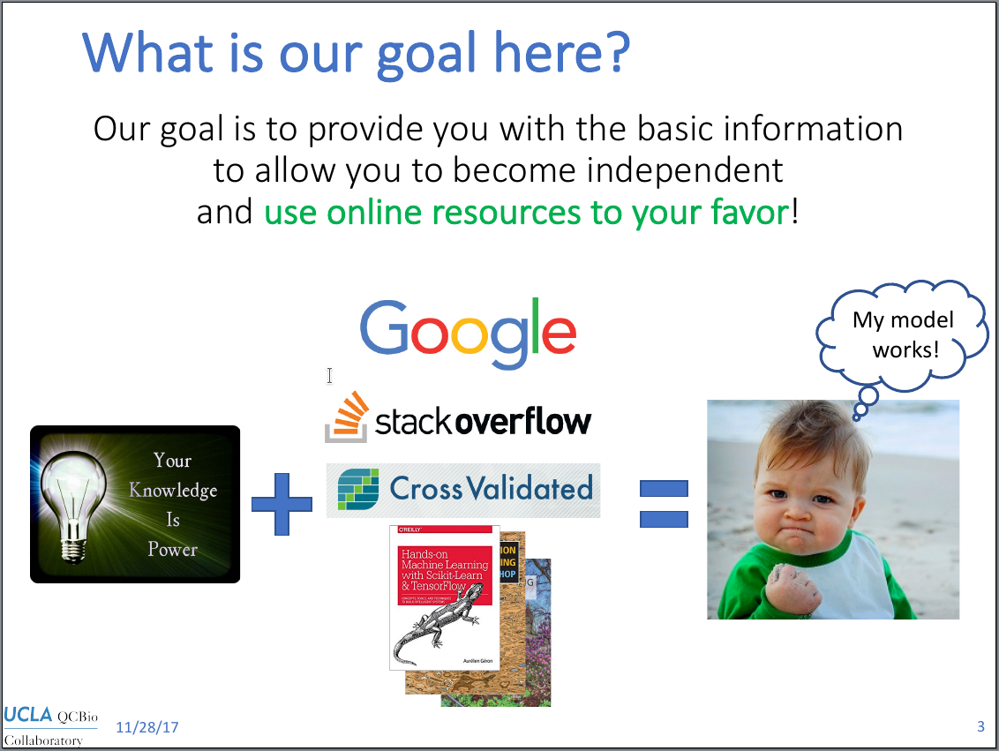

Homepage for the Collaboratory Workshop -- November 2017
The slides from Day 1 are available here.
Class materials
Great examples of Jupyter Notebooks
You will find below a list of great examples of notebooks to use as inspiration for your own work. Because all of these notebooks are publicly available, you can download them and open locally to examine them. If you want even more notebooks, check out this gallery of notebooks provided by the Jupyter project.
Genomics and NGAMore about object orientation
If you want to learn more about object orientation in Python, you can find below some resources to help you getting started.Slides from this class are available here.
Class materials
Jupyter with other languages
To be posted soon...